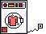

CLOSET
I am a Girl and Girls love Clothing and Makeup. This is an ineffable law since time immemorial.
I can't really put a name to my style or taste with this stuff. A lot of what I wear are hand-me-downs from my mum and things I have picked up at secondhand shops. There's a little bit of punk, a little bit of mod, a little bit of cozy schoolgirl vibes, a lot of rockabilly... and just anything I think is cool really. I like skate tees and Western shirts and sailor dresses and painter shorts and tattoo-print skirts and hats. I love wearing hats. I'm basically always wearing a hat is the truth. Hat girl til I die.
On this page, you can find a selection of my favourite outfits, a page on what and who inspires my style, and some kind of unspecified page on make-up I may or may not ever finish.


Fashion Files
A 'morgue file' for clothes!
Wicked styles from fashion blogs, old magazines, punk-rock photography and more.

My Favourite Fits
Showcases of some of my own favourite outfits and clothing items.
Make-Up Drawer
A page about something. Who knows what this'll be honestly.